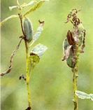
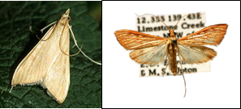

| Home |
| GINGELLY |
| 1. Leaf Webber |
| 2. Sphinx Moth |
| 3. Gall Fly |
| 4. Leaf Hopper |
| 5. Pod Bug |
| 6. Aphid |
| questions |
| Download Notes |
PESTS OF GINGELLY :: Major Pests :: Leaf Webber
1. Leaf webber: Antigastra catalaunalis (Pyralidae: Lepidoptera)
Distribution and status: India, Africa, South Europe, Malta, Burma, Bangladesh, Indonesia, Sri Lanka and U.S.S.R.
Host range: Sesame, Antirrhinum and Duranta.
Damage symptoms: Larva webs the top leaves together and bore the tender shoots in the vegetative phase. Flowers and young capsules are bored at reproductive stage.
 |
Bionomics: Moth is brown with yellowish brown wings. It lays eggs on tender parts of plants. The egg period is 4-5 days. Fully grown pale green larva with black head and dots all over the body measures 20 mm in length. The larval period is 11-16 days. It pupates in leaf folds in a white silken cocoon for 4-7 days.
 |
ETL: 2 webbed leaves/sq.m. (or) 10% damage.
Management
- Culture of sesame like EH7, 57, 84, 105, 106 and 156 should be encouraged as these are observed to be completely resistant against A. catalaunalis.
- Dusting the crop with 2% parathion.
- Spraying with dimethoate 30 EC 500 ml or methyl parathion 50 EC 500 ml or endosulfan 35 EC 1.25 L or carbaryl 50% WP I kg in 700 L water per hectare.